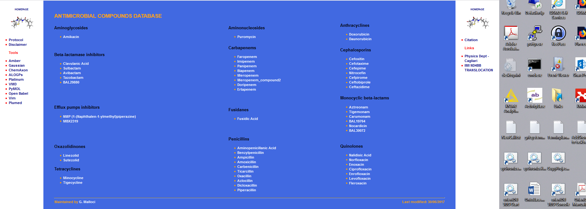
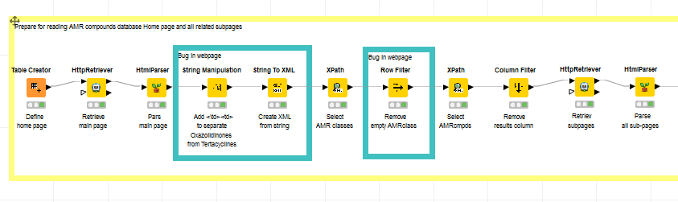
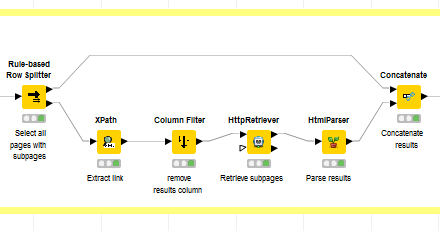
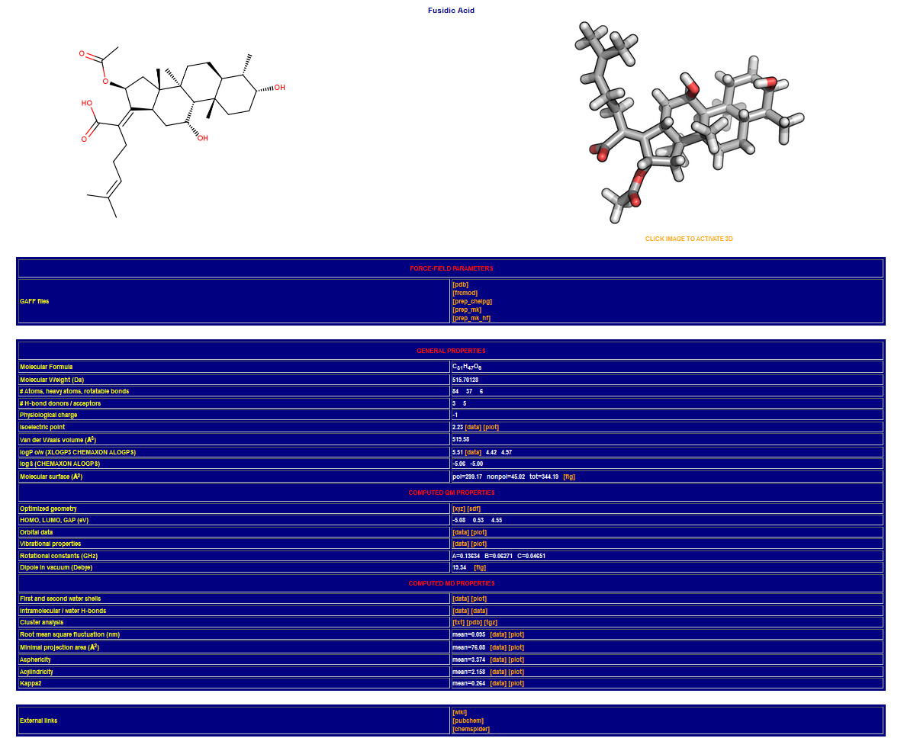
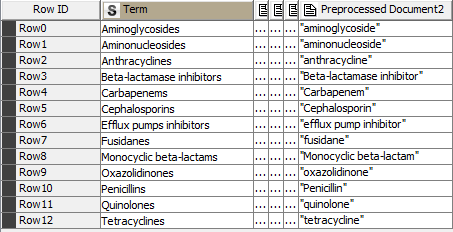

---
redirect_from:
  - "/recipes/nd4bb-raw/fairification-cookbook-recipe1-v02"
title: |-
  ND4BB experience Recipe
prev_page:
  url: /recipes/oncotrack_raw/rawRecipe-oncotrack.html
  title: |-
    ONCOTRACK experience Recipe
next_page:
  url: /features/features.html
  title: |-
    Features and customization
suffix: .md

comment: "***PROGRAMMATICALLY GENERATED, DO NOT EDIT. SEE ORIGINAL FILES IN /content***"
---

    <main class="jupyter-page">
    <div class="jb_cell">

<div class="cell border-box-sizing text_cell rendered"><div class="inner_cell">
<div class="text_cell_render border-box-sizing rendered_html">
<h1 id="Feedback-Form-for-the-Recipe-AMR-dataset">Feedback Form for the Recipe AMR dataset<a class="anchor-link" href="#Feedback-Form-for-the-Recipe-AMR-dataset"> </a></h1><p>Please fill the feedback form and /or comment on the ingested feedback</p>
<h2 id="Who">Who<a class="anchor-link" href="#Who"> </a></h2><p>This recipe relates to a data steward (as opposed to a data producer or a data user).</p>
<h2 id="When">When<a class="anchor-link" href="#When"> </a></h2><p>After the data has been generated (as opposed to project design, or while data is being produced)</p>
<h2 id="Why">Why<a class="anchor-link" href="#Why"> </a></h2><p>Generic improvement of FAIR parameters. Make the AMR data more visible by using a public repository instead of a local webpage at UNICA.</p>
<h2 id="How-(materials):">How (materials):<a class="anchor-link" href="#How-(materials):"> </a></h2><h2 id="How-(process):">How (process):<a class="anchor-link" href="#How-(process):"> </a></h2><table>
  <tr>
    <td>Defined FAIRification Steps</td>
    <td>How it is implemented 
Tools/Process</td>
    <td>Pros</td>
    <td>Cons</td>
    <td>Comments/Questions 
</td>
  </tr>
  <tr>
    <td>Define use case or describe scientific question</td>
    <td>missing</td>
    <td></td>
    <td></td>
    <td></td>
  </tr>
  <tr>
    <td>Fill out ELSI questionnaire 
https://drive.google.com/drive/u/0/folders/1iOShHkInNUuFoRYADwXKxS1_-UAIRmRK </td>
    <td>missing</td>
    <td></td>
    <td></td>
    <td></td>
  </tr>
  <tr>
    <td>Select/define target repository or schema</td>
    <td>missing</td>
    <td></td>
    <td></td>
    <td>Any restrictions due to the selected repository/schema, e.g. missing fields?</td>
  </tr>
  <tr>
    <td>Extract the information (data and metadata) from original source(s)</td>
    <td>Process: extracts data
Tool: KNIME
Source: Website</td>
    <td>KNIME workflow:
- Provides a Repeatable processes
-  Handles complex data extraction flows
 Easy to explain</td>
    <td>- Creating KNIME workflow requires a certain level of expertise/or training

- Workflows are customized to the data source (web page)
each variation at the source requires an additional branch </td>
    <td>Do we include the ETL processes in FAIRification cookbook ?
Having a reusable ETL process might help to continuous FAIRification of the resource 
</td>
  </tr>
  <tr>
    <td>Transform the extracted data into a common schema</td>
    <td>Process: transforms extracted data into a schema and if needed fills the missing values
Tool: KNIME/Excel
Output: Excel</td>
    <td>KNIME workflows can be tailored to fix systematic missing values (e.g. 2D image)</td>
    <td>- Excel does not explicitly describes the relations between the entities (e.g. Property Group and Property). Therefore predicates between concepts cannot be expressed (e.g. Property hasA PropertyGroup)</td>
    <td></td>
  </tr>
  <tr>
    <td>Extract administrative metadata </td>
    <td></td>
    <td></td>
    <td></td>
    <td></td>
  </tr>
  <tr>
    <td>Extract structural metadata and add semantic annotations based on publicly available ontologies</td>
    <td>it has four sub procedures: 
1) Enhancement
2) Annotation via vocabulary services 
ZOOMA
NCBO
3) Assessing the relevance of suggested vocabularies 
4) Merge
</td>
    <td>
</td>
    <td></td>
    <td>PRS: PID are missing for the searches over zooma and bioportal</td>
  </tr>
  <tr>
    <td>Substep1: Enhancement</td>
    <td>Process: generate alternative syntax of data to increase the annotation performance
Tool: KNIME
</td>
    <td>Variations in spelling of concepts (e.g. adding special characters) can be generated with workflows</td>
    <td>heuristic approach ( these methods can be provided as tips in the cookbook)</td>
    <td></td>
  </tr>
  <tr>
    <td>Substep2a: Annotation via vocabulary services: ZOOMA</td>
    <td>Process: Searching related ontology terminologies 
Recommender Service: ZOOMA 
Output: Excel</td>
    <td>- easy to use</td>
    <td>- performance relies on the recommender service</td>
    <td></td>
  </tr>
  <tr>
    <td>Substep2b: Annotation via vocabulary services: NCBO</td>
    <td>Process: Searching related ontology terminologies 
Recommender Service: NCBO API
Output: Excel</td>
    <td>-   easy to use
-   NCBO has a large collection of ontologies. KNIME workflow restricts the search to a curated list of ontologies (Search Ontologies.txt)</td>
    <td>- performance relies on the recommender service
- creating a curated list of ontologies requires domain expertise and knowledge on existing ontologies.
</td>
    <td>Success of the annotation  depends on the vocabulary services. Performance of recommender services can be tested before the annotation process. If needed performance improvement methods can be defined (e.g. restricted search)</td>
  </tr>
  <tr>
    <td>Substep3: Assessing the relevance of suggested vocabularies</td>
    <td>Process: assessing the relevance of the recommended ontology terms
Tool: Java functions compareTo() and contains()</td>
    <td>- readily available 
- CompareTo() returns the exact matches</td>
    <td>- contains() function returns positive when the query term is contained in the recommended term. Might require expert review.
- recommender systems might suggest a term with a different spelling. These terms will not be considered as a match by the functions and will need an expert review.</td>
    <td>Automated rating of the recommended terminologies is based on syntactical matches, expert review is required.</td>
  </tr>
  <tr>
    <td>Substep4: merging annotations</td>
    <td>Process: select  the results from multiple annotation flows
Tool: manual</td>
    <td>- data can be annotated with multiple ontologies</td>
    <td>-  if there is a need to select one matching ontology term for each entity, no guidance exists</td>
    <td>Comment by Andrea S:distinguish between suggestive choices vs objective ones.
(Yes, but that will not e.g. make a protein a gene, or a liver a hepatocyte). So we need mappings and the subjective part translates into context and using lenses</td>
  </tr>
  <tr>
    <td>Extract descriptive metadata and add semantic annotations based on publicly available ontologies</td>
    <td></td>
    <td></td>
    <td></td>
    <td></td>
  </tr>
  <tr>
    <td>Add license to data set </td>
    <td>is this defined in the recipe ?</td>
    <td></td>
    <td></td>
    <td></td>
  </tr>
  <tr>
    <td>Store data (=experimental results) together with administrative, structural, and descriptive metadata in a repository</td>
    <td></td>
    <td></td>
    <td></td>
    <td></td>
  </tr>
  <tr>
    <td>Add PID to data set (=digital object)</td>
    <td>is this defined in the recipe ?</td>
    <td></td>
    <td></td>
    <td>PID are missing for the searches over zooma and bioportal</td>
  </tr>
  <tr>
    <td>Add metadata together with PID to a public catalog </td>
    <td></td>
    <td></td>
    <td></td>
    <td></td>
  </tr>
  <tr>
    <td>Add metrics according to CMMI and add to the public catalog</td>
    <td></td>
    <td></td>
    <td></td>
    <td></td>
  </tr>
  <tr>
    <td>in your opinion if any FAIRification step is missing please add them here</td>
    <td></td>
    <td></td>
    <td></td>
    <td></td>
  </tr>
  <tr>
    <td>Suggested FAIRification Step</td>
    <td>
Why  it is needed</td>
    <td>
Place in the workflow</td>
    <td>
Any suggested tools/processes</td>
    <td></td>
  </tr>
  <tr>
    <td>Assessment of the current FAIR level.
(at the beginning)</td>
    <td></td>
    <td></td>
    <td>Subjective. Is having data in html tales 1 or 2 stars ?</td>
    <td>Out of the recipe, but present in the document. Is this something worth as a genetic first step? What would we use this assessment for?</td>
  </tr>
  <tr>
    <td>Data fixing
(at the beginning)</td>
    <td>Manual? Issue detection as a sub-product of workflow definition?</td>
    <td></td>
    <td></td>
    <td></td>
  </tr>
  <tr>
    <td>Schema /Data model definition</td>
    <td>Targeted data model can be defined explicitly and annotated with a set of vocabularies</td>
    <td>before the data extraction </td>
    <td></td>
    <td></td>
  </tr>
  <tr>
    <td>Add a manifest describing the content of the archive</td>
    <td>eases dive into the datasets for humans who can obtains basic information about each of the element or bundles in a dataset</td>
    <td>NA</td>
    <td></td>
    <td></td>
  </tr>
  <tr>
    <td>Add checksums for all files for QC and integrity checks</td>
    <td>allow integrity checks thus enables reuse
</td>
    <td></td>
    <td>various options.
e.g. python hashlib  </td>
    <td></td>
  </tr>
  <tr>
    <td>Executing the workflow fails owing to use of localized file references in Knime workflows (which seems unavoidable)</td>
    <td>avoid hard links to local storage</td>
    <td>KNIME worklows</td>
    <td></td>
    <td></td>
  </tr>
  <tr>
    <td>Absence of Ontology terms identifiers for all the terms retrieved from BioPortal/Zooma (only the strings are apparently retrieved)</td>
    <td>curis should be included</td>
    <td>knime/workflow output should always contains class label + class identifiers
</td>
    <td></td>
    <td></td>
  </tr>
  <tr>
    <td>Selected Ontologies ought to be identified more completely</td>
    <td>abbreviation (.e.g CHEBI) is reported but</td>
    <td></td>
    <td></td>
    <td></td>
  </tr>
</table><h1 id="Reflections-on-the-workflow-(trying-to-unify-the-part-above,-and-what-was-suggested-in-the-picture-in-the-main-doc.">Reflections on the workflow (trying to unify the part above, and what was suggested in the picture in the main doc.<a class="anchor-link" href="#Reflections-on-the-workflow-(trying-to-unify-the-part-above,-and-what-was-suggested-in-the-picture-in-the-main-doc."> </a></h1><h4 id="Figure-P1">Figure P1<a class="anchor-link" href="#Figure-P1"> </a></h4><h1 id="FAIRification-cookbook">FAIRification cookbook<a class="anchor-link" href="#FAIRification-cookbook"> </a></h1>
<pre><code>1. Problem formulation

</code></pre>
<p>Preface: I’m not the owner of the data, but would like to help making the data as useful as possible to the community, i.e. FAIR in the widest meaning: findable for everybody, accessible for everybody, interoperable for human and machine readability and linkable to any other resource, and re-usable by providing an accurate semantic annotation for all kind of metadata information (see below). Therefore it would be useful for me to understand what is missing or what could be done better to make the data set FAIR. I used a simple small data set for the first learnings. I’m aware that complexity will bring more and other issues to the process, but once we have solved the simple issues we can concentrate on more (possibly realistic?) cases.</p>
<p>Previous experiences along this line were collected in this document: <a href="https://osf.io/sjzc8/">https://osf.io/sjzc8/</a></p>
<p>The basic reason for using this simple data set is to generate as early as possible a common understanding within FAIRplus what FAIRification means and how to achieve FAIRification. Some initial questions are:</p>
<ul>
<li><p>What type of maturity matrix is appropriate, a single 5 star grading like RDA proposed in <a href="https://doi.org/10.5281/zenodo.1285272">https://doi.org/10.5281/zenodo.1285272</a> on page 57 or a more complex 4x5 matrix like in <a href="http://blog.ukdataservice.ac.uk/fair-data-assessment-tool/">http://blog.ukdataservice.ac.uk/fair-data-assessment-tool/</a> or <a href="https://fairshake.cloud/">https://fairshake.</a><a href="https://fairshake.cloud/">cloud</a><a href="https://fairshake.cloud/">/</a></p>
</li>
<li><p>Can we generate a FAIR data set for only a single use case or does FAIRification implicitly means a general or universal FAIRification, i.e. once a data set is made FAIR it can be used in all thinkable scenarios?</p>
</li>
<li><p>Does FAIRification always means a complete FAIRification, or is it possible to have a partly FAIRified data set (e.g. only structural metadata are annotated)?</p>
</li>
<li><p>A more technical question could be: Is it sufficient to add the link of an ontology term or do we need also information about the version of the ontology used or other additional information (e.g. tool used to annotate…)?</p>
</li>
<li><p>Are there any best practice procedures described within Life science or other scientific areas which we can adopt?</p>
</li>
</ul>
<p>The AMR Compounds Database (<a href="https://www.dsf.unica.it/translocation/abdb/">https://www.dsf.unica.it/translocation/abdb/</a>) (NOTE:  A Database of Force-Field Parameters, Dynamics, and Properties of Antimicrobial Compounds, <a href="https://doi.org/10.3390/molecules200813997">https://doi.org/10.3390/molecules200813997</a>) contains information about known compounds with antimicrobial activity. The data was generated during the IMI ND4BB TRANSLOCATION project at University of Cagliari using several different simulation tools. The data is worth to be made FAIR, especially for machine readability.</p>
<p>My personal proposal on maturity is (I prefer a 4x5 matrix):</p>
<ul>
<li><p>F: 1 star - data set is findable via a web based search by using the correct keywords, but it is not listed in a common catalogue</p>
</li>
<li><p>A: 2 star – data can be accessed without restrictions, a dedicated license is missing; the URL is constant over a long period of time, a PID is missing, an API would be better</p>
</li>
<li><p>I: 2 star - data format of the webpages is homogeneous, also two small bugs hinder a straight download</p>
</li>
<li><p>R: 1 star – semantic annotations are missing, data structure is not like a simple 2D table,  units are given with data, clear separation of aggregated and raw data is not straightforward</p>
</li>
</ul>
<p>In this use case the complete workload should be demonstrated to make the data set FAIR. This include but is not restricted (NOTE:  A very detailed Action Plan is given in Turning FAIR into Reality <a href="https://doi.org/10.2777/1524">https://doi.org/10.2777/1524</a> on page 17) to</p>
<ul>
<li><p>Extract the information (data and metadata) from original source(s)</p>
</li>
<li><p>Transform the extracted data into a common schema</p>
</li>
<li><p>Extract administrative (NOTE:  The term administrative metadata is used for provenance information, e.g. owner, date of creation ) metadata</p>
</li>
<li><p>Extract structural (NOTE:  The term structural metadata is used to specify metadata describing the structure of a data set. Commonly column names and/or IDs are used to describe the data (=experimental results). Other metadata are administrative (=provenance) or descriptive (=protocol) metadata. ) metadata and add semantic annotations based on publicly available ontologies</p>
</li>
<li><p>Extract descriptive (NOTE:  The term descriptive metadata is used for any (unstructured) text describing the procedure (commonly the protocol) to generate the experimental results (=data).  ) metadata and add semantic annotations based on publicly available ontologies</p>
</li>
<li><p>Add license to data set</p>
</li>
<li><p>Store data (=experimental results) together with administrative, structural, and descriptive metadata in a repository</p>
</li>
<li><p>Add PID to data set (=digital object)</p>
</li>
<li><p>Add metadata together with PID to a public catalog</p>
</li>
<li><p>Add metrics according to CMMI and add to the public catalog</p>
</li>
</ul>
<p>The process is visualized in the following figure. Some of the steps/phases might need some repetitions, while others may be optional.</p>
<p></p>
<p><em>Figure 1 my personal simplified schematic workflow of FAIRification. Some steps need repetitions (yellow arrows). Not all steps are mandatory, e.g. step 5 is required only if qualitative data are available.</em></p>
<p>The AMR database consists of several nested static HTML pages. The information is well structured, results are mainly quantitative (NOTE:  Quantitative data don’t need another complex step of semantic annotation in contrast to qualitative data (e.g. diagnoses)) numeric data, and for all compounds a complete set of data is available. Thus, it should be easily linkable to other public sources (e.g. PubChem (NOTE:  The structure of the compound is extracted as sdf file from PubChem as noted in the Protocol (<a href="https://www.dsf.unica.it/translocation/db/protocol.html">https://www.dsf.unica.it/translocation/db/protocol.html</a>) )) and a machine readable data set should be easily creatable.</p>

<pre><code>2. Recipe 

</code></pre>
<p>In the following recipe only steps 1, 2, 3, 4, and 7 of Figure 1 are studied, with special focus on extraction and semantic annotation of structural metadata. Missing steps are extraction of the administrative metadata (6) from homepage and the descriptive metadata (8) from page <a href="https://www.dsf.unica.it/translocation/db/protocol.html">https://www.dsf.unica.it/translocation/db/protocol.html</a>. Before steps 9-13 are implemented a discussion with the data owner should be initiated about additional improvements.</p>

<pre><code>    1. Extract data from AMR Compounds Database ([https://www.dsf.unica.it/translocation/abdb/](https://www.dsf.unica.it/translocation/abdb/))

</code></pre>
<p>This workflow annotates the structural metadata (e.g. column names). No administrative or descriptive metadata are annotated. The data itself (results of measurement/analysis) are not checked for correctness.</p>
<p>Data are extracted from website using a KNIME workflow. The website is structured into a central part (see green frame in Figure 1) with data and two side columns on the left and right hand with additional information not in focus for FAIRification.</p>
<p></p>
<p>The central part of the home page consists of a single table with compound class names as table data configured as heading level 3 (<h3>) and compounds as unsorted list (<ul>).</p>

<pre><code>        &lt;h1 align="left"&gt;ANTIMICROBIAL COMPOUNDS DATABASE&lt;/h1&gt;

        &lt;table class="table1"&gt;

            &lt;tbody&gt;

                &lt;tr&gt;

                    &lt;td&gt;

                        &lt;h3 align="left"&gt;Aminoglycosides&lt;/h3&gt;

                        &lt;ul class="list1"&gt;

                            &lt;li&gt;

                                &lt;a href"https://www.dsf.unica.it/translocation/abdb/amikacin.html"&gt;Amikacin&lt;/a&gt;

                            &lt;/li&gt;

                        &lt;/ul&gt;

                    &lt;/td&gt;

                    &lt;td&gt;

                        &lt;h3 align="left"&gt;Aminonucleosides&lt;/h3&gt;

                        &lt;ul class="list1"&gt;

                            &lt;li&gt;

                                &lt;a href="https://www.dsf.unica.it/translocation/abdb/puromycin.html"&gt;Puromycin&lt;/a&gt;

                            &lt;/li&gt;

                        &lt;/ul&gt;

                    &lt;/td&gt;


</code></pre>
<p>The compound class name and the compound name together with the link to the subpage is extracted by an XPATH node (see Figure 2).</p>
<p></p>
<p><em>Figure 3 Workflow to extract antimicrobial classes and compound with their corresponding subpages</em></p>
<p>REMARK: A bug was found between Oxazolidinones and Tetracyclines. All the other compound classes are table data separated by <td>…</td> except for this one. Therefore the extracted XML document was updated before applying further nodes to the XML document.</p>
<p>Next step in the workflow is to extract the AMR class name and the corresponding XML structure for further extraction</p>
<p>REMARK: As all tables in the home page are labeled ‘table1’ therefore the extraction of XPATH could not use a named parameter like "//dns:table[@class='table1']/… ". Either a distinct table need to be referenced like "//dns:table[1]/dns:tbody/dns:tr/dns:td/dns:h3" or all tables are read and the empty rows are deleted</p>
<p>Next steps are the extraction of the subpages via XPATH and HttpRetriever node.</p>
<p>REMARK: For two compounds (Amikacin and Ampicillin) multiple subpages for different charged molecules exist. Therefore these webpages have to follow and extended workflow (see Figure 3).</p>
<p></p>
<p><em>Figure 4 Workflow (lower part) for additional subpage for multiple charges</em></p>
<p>The last part of the workflow (see Figure 4) extracts the data from the subpage of the compound respectively charges (see Figure 5). Each webpage consists of a table section with the compound name, a 2D and 3D image, two tables with links to files or properties and a table with links to external sources. The external sources are not considered as relevant for FAIRification.</p>
<p><em> Figure 5 Workflow to extract the data from compound/charge webpage</em></p>
<p></p>
<p><em>Figure 6 Example of a webpage. Green frames are considered to be relevant for FAIRification</em></p>

<pre><code>    2. Prepare data for semantic annotation 

</code></pre>
<p>The data were extracted following the schema: PropertyGroup – Property – Value where PropertyGroup is the heading of the table, Property is the type of property and Value is the corresponding value of the property which will be not part of the annotation process.</p>
<p>For the first section of a webpage no data can be extracted from the 2D image therefore a fixed value (‘2Dimage’) is given by the workflow.</p>
<p></p>
<p><em>Figure 7 Example data set for +3 charged Amikacin </em></p>
<p>For each of the columns a separate excel sheet is generated with the unique values of the column (see Figure 7.</p>
<p></p>
<p><em>Figure 8 Workflow to extract unique results for each column and write a separate worksheet to an Excel file</em></p>

<pre><code>    3. Annotate data based on ontology terms

</code></pre>
<p>For this step separate workflows are used.</p>
<p>Workflow consists of a preparation part shown in Figure 8. Preparation consists of generating the input filename and attaching the time point of workflow start for the output filename. In addition a list of search ontologies can be attached to the search query. A row splitter removes the sheet named ‘WorkflowDocu’ from the list of worksheets with terms to be annotated.</p>
<p></p>
<p><em>Figure 9 Preparation part of the annotation workflow</em></p>
<p>The resulting list of worksheets is then feed into a loop, which reads each worksheet, generates a request for the specific annotation service (ZOOMA or NCBO Recommender) and summarizes the results into a new Excel workbook named like the original workbook with service and time attached. The loop part of the workflow is shown in Figure 9.</p>
<p></p>
<p><em>Figure 10 Repetead evaluation part of the annotation workflow</em></p>
<p>The last step of the workflow is shown in Figure 10. This part annotates the Excel worksheet with provenance data like the date of execution and the workflow name generating the Excel file.</p>
<p></p>
<p><em>Figure 11 Final documentation part of the annotation workflow</em></p>

<pre><code>    4. Results

</code></pre>
<p>Both generated files ‘ExtractedMetadata_20190124_ZOOMA_0329.xlsx’ and ‘ExtractedMetadata_20190124_NCBOREC_0347.xlsx’ show nearly same number of annotated terms, also the number searched ontologies for the NCBO Recommender (313) was much higher than the number of searched ontologies for the ZOOMA (11) service. For only few cases the NCBO Recommender showed results (e.g. BAL29880 and MBX2319) were ZOOMA did not find a corresponding ontology.</p>

<pre><code>    5. Enhancements

</code></pre>
<p>For phrases with special characters (e.g. -_# etc.) several optional combination of words should be tested like ‘beta-lactamase inhibitors’, ‘beta lactamase inhibitors’ and ‘betalactamase inhibitors’ which might increase the chance to get a result. In the example NCBO-Recommender finds only results for the first term, while ZOOMA retrieves results for all three terms.</p>
<p>Another example would be Aminonucleosides, Aminonucleoside, Amino nucleoside. While NCBO Recommender found no result, ZOOMA found at least a result for the terms ‘Aminonucleoside’, ‘Amino nucleosid’. Thus a stemmer or lemmatizer should be run prior to the ontology mapping service (or the service could offer this ;-))</p>
<p>An example for an enhanced KNIME workflow is presented in Figure 11</p>
<p></p>
<p><em>Figure 12 Workflow enhancement for stemmed/lemmatized phrases</em></p>
<p>The output of the Workflow enhancement is shown in Table 1</p>
<p><em>Table 1 Output of workflow enhancement</em></p>
<p></p>
<p>Results of the enhanced workflows (ExtractedMetadata_20190124_TP+ZOOMA_1019.xlsx and ExtractedMetadata_20190124_TP+NCBOREC_1021.xlsx) show nearly similar no of results without mapping terms compared to the initial workflow, but both workflows retrieved different terms as ‘did not map’. In the initial workflow ‘Aminonucleosides’ did not map, while in the second workflow ‘aminoglycoside’ did not map. Therefore all terms/combination of terms need to be tested.</p>

<pre><code>3. Conclusion

</code></pre>
<p>The proposed workflow is insufficient to extract adequate and consistent semantic annotations for the structural metadata. In addition the retrieved links do not reflect the used version of the ontology.</p>

</div>
</div>
</div>
</div>

 


    </main>
    